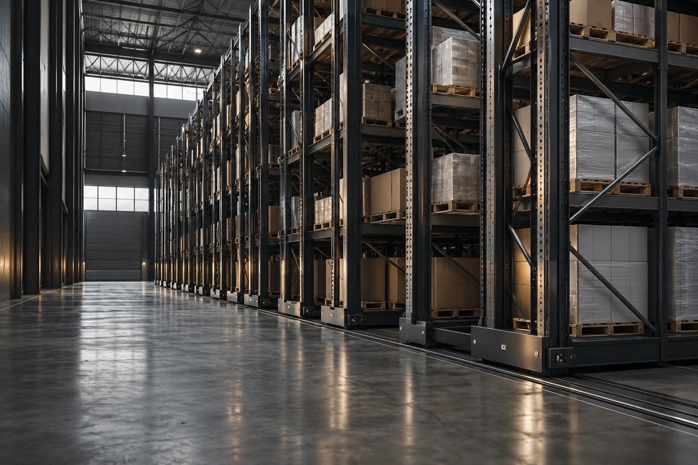
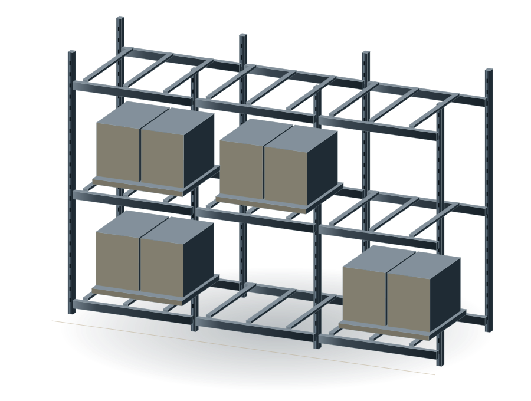
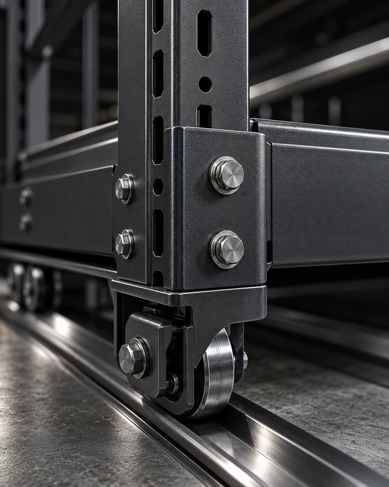
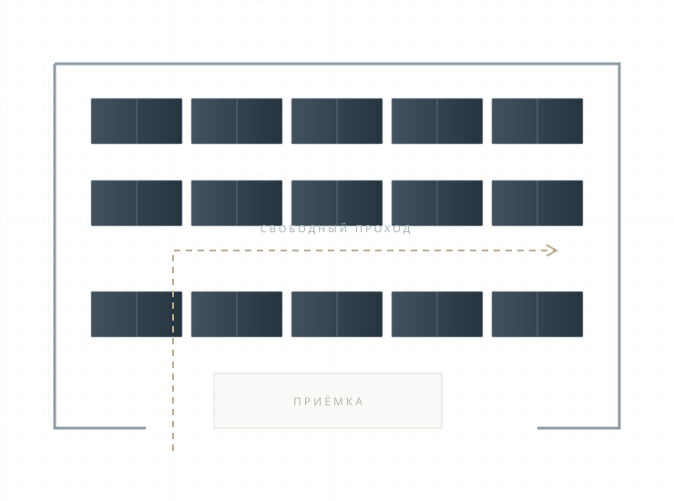

Планировка склада
Размеры помещения, расположение ворот и колонн, зоны приёмки и отгрузки.

ОБОРУДОВАНИЕ ДЛЯ СКЛАДА
Хранение с удобным доступом к грузу.
Планировка с учётом помещения и складской техники.
Паллетные, полочные и мезонинные системы для хранения, комплектации и отгрузки.
ПланировкаКонструкцияМонтажТРИ ТИПА СИСТЕМ
Тип груза и способ обработки определяют конструкцию.
Сравните системы по задачам вашего склада.
Для грузов на поддонах и работы погрузчика. Высота ярусов и ширина проходов подбираются под груз и технику.

ПОРЯДОК РАБОТЫ
В проекте учитываются груз, движение техники
и порядок комплектации заказов.
Размеры помещения, расположение ворот и колонн, зоны приёмки и отгрузки.
Вес и габариты груза, число мест хранения, высота ярусов и ширина проходов.
Состав оборудования, требования к площадке и согласованный порядок сборки.

СТВОРПЕРВЫЙ ШАГ К ПРОЕКТУ
Размеры помещения и характеристики груза помогут подобрать систему и оценить стоимость проекта.
Демоверсия: задание можно сохранить. Заявка не отправляется.
